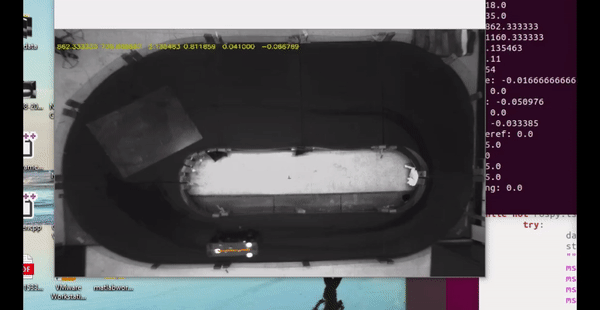

RU-Racer: A research platform for autonomous cars, specializing in racing and stunt manuevers
We have built multiple platform to experiment our novel motion planning, motion control algorithms. Using advanced intelligent learning methods to synthesize safe and robust control systems for our scaled autonomous vehicles.

We proposed using stunt and aggressive manuevers with confidence, similar to those being performed by professinal race car drivers.
The proposed method can be used as advanced safety feature for hazard avoidance.
Autonomous J-turn maneuvers inspired by professional racecar drivers
"Safe Motion Control and Planning for Autonomous Racing Vehicles", Aliasghar Arab, Rutgers, The State University of New Jersey, School of Graduate Studies, 2021. [Thesis]